import warnings
warnings.filterwarnings('ignore')7 Lab: Visualising Data
In the previous chapter we started exploring some data by using some methods such as describe, info, head, shape… However, it is usually far easier to look at trends in data by creating plots.
In this chapter we will be using pandas’ built-in visualisation capabilities via matplotlib to create some basic (but quick!) data visualisations from the The Office dataset. We will be using these visualisations on the next chapter, whereas on Chapter 9 we will use another plotting library to create customised visualisations.
7.1 Starting
As usual, we will be starting by loading the required libraries and dataset(s):
import pandas as pd
# This following is a small change that will make sure that the plots are created in a particular "style".
# The following will mimic the famous "ggplot" style that is popular in the R coding realm.
# There are many other default styles -- https://matplotlib.org/stable/gallery/style_sheets/index.html
# feel free to change 'ggplot' in the line below and recreate the plots, see how things look
import matplotlib.pyplot as plt
plt.style.use('ggplot')
df = pd.read_csv('data/raw/office_ratings.csv', encoding='UTF-8')# Check our dataset.
df.head()| season | episode | title | imdb_rating | total_votes | air_date | |
|---|---|---|---|---|---|---|
| 0 | 1 | 1 | Pilot | 7.6 | 3706 | 2005-03-24 |
| 1 | 1 | 2 | Diversity Day | 8.3 | 3566 | 2005-03-29 |
| 2 | 1 | 3 | Health Care | 7.9 | 2983 | 2005-04-05 |
| 3 | 1 | 4 | The Alliance | 8.1 | 2886 | 2005-04-12 |
| 4 | 1 | 5 | Basketball | 8.4 | 3179 | 2005-04-19 |
7.2 Univariate plots - a single variable
Univariate plots are a great way to see trends. We will create them using plot method.
# Read the documentation to understand how to use plot.
?df.plotWe can use plot to quicky visualise every variable1 in the dataset.
1 Actually this may not be accurate. Are you missing any column? Can you guess why are they missing?
# Create a plot for every variable in the dataset
df.plot()<Axes: >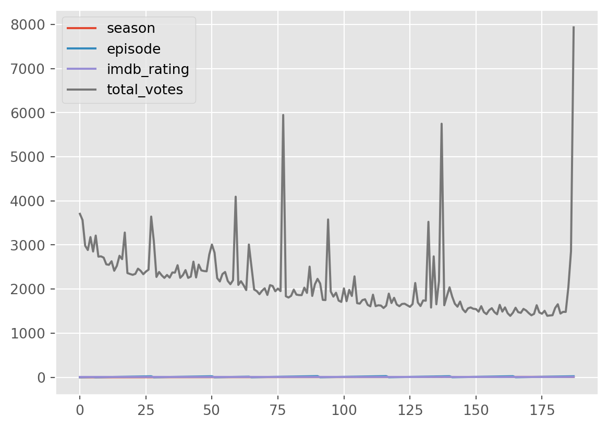
Some of the variables look rather funny. It’s not a great idea to work with just the defaults here where all the variables are embedded in a single plot.
We can look at a specific column and that is always more helpful.
# Visualise a column and add a title.
df['total_votes'].plot(title='Total Votes')<Axes: title={'center': 'Total Votes'}>
7.2.1 Subplots
We can also create subplots, where every variable is plotted individually and put next to the others, while sharing the axis.
df.plot(subplots=True)array([<Axes: >, <Axes: >, <Axes: >, <Axes: >], dtype=object)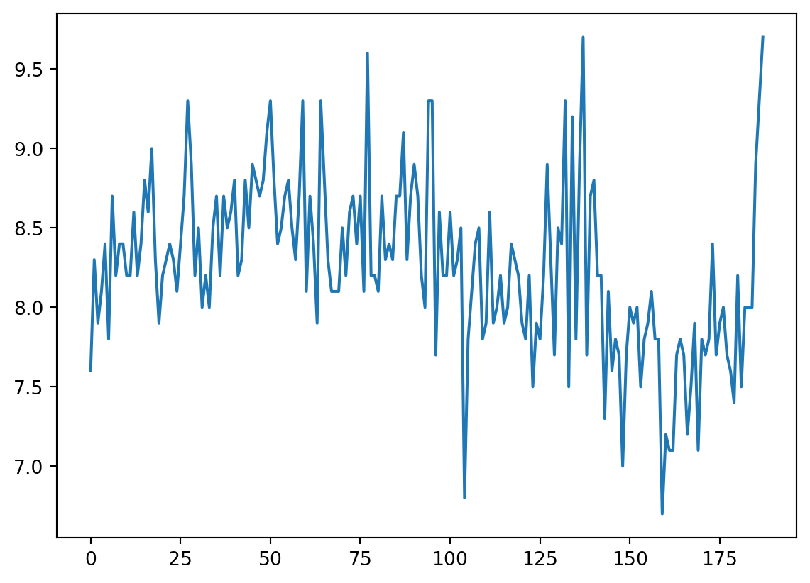
Season and episode is not at all informative here.
Think about why. Why are these plots less useful? The “defaults” – in this case, simply running the plot() function can only get you so far. You will need to have a good reason why you want to create a plot and what you expect to learn from them. And the next thing to ask is what kind of plot is most useful?
df[['imdb_rating', 'total_votes']].plot(subplots=True)array([<Axes: >, <Axes: >], dtype=object)
7.2.2 Histograms
Often times, instead of seeing the actual values we may be interested in seeing how they are distributed. This is known as a histogram, and we can create them vy changing the plot type using the kind argument:
df[['imdb_rating', 'total_votes']].plot(subplots=True, kind='hist')array([<Axes: ylabel='Frequency'>, <Axes: ylabel='Frequency'>],
dtype=object)
Unfortunatly, since subplots share axes, our x axis is bunched up. The above tells us that the all our IMDB ratings are between 0 and a little less than 1000… not useful.
Probably best to plot them individually.
df[['imdb_rating']].plot(kind='hist', title = "Ratings per episode")<Axes: title={'center': 'Ratings per episode'}, ylabel='Frequency'>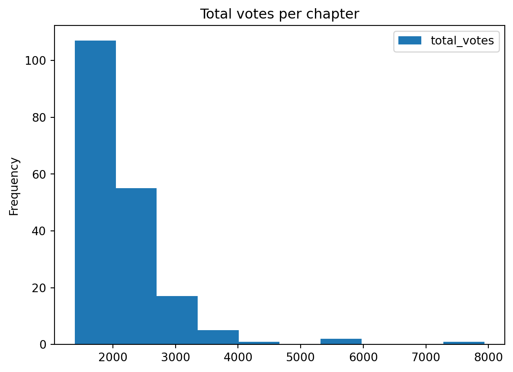
Quite a sensible gaussian shape (a central point with the frequency decreasing symmetrically).
df[['total_votes']].plot(kind='hist', title= "Total votes per chapter")<Axes: title={'center': 'Total votes per chapter'}, ylabel='Frequency'>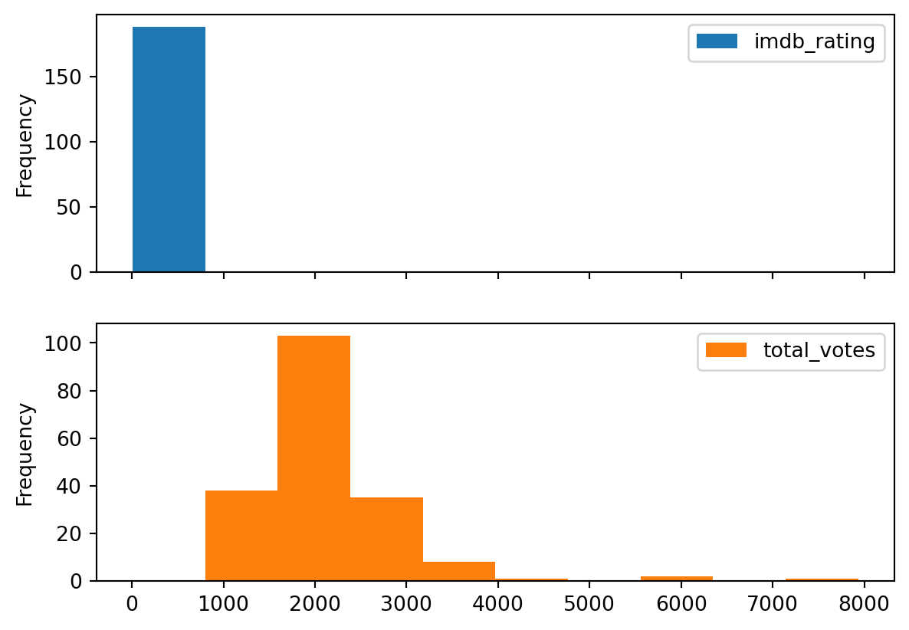
A positively skewed distribution - many smaller values and very few high values.
7.3 Bivariate - Two variables
Sometimes, instead of visualising variables individually, we may want to see them in relation to others, so we can identify possible correlations. Scatter plots are simple ways to explore the relationship between two variables, where one is displayed on the X axis and the other one in the Y axis.
We may want to see if the number of votes and the imdb rating are not independent events. In other words, we want to know if these two data variables are related. We will be creating a scatterplot using the following syntax: <object>.plot(x = "<variable1>", y = "<variable2>", kind = "scatter")
# Create a scatterplot
df.plot(x='imdb_rating', y='total_votes', kind='scatter', title='IMDB ratings and total number of votes')<Axes: title={'center': 'IMDB ratings and total number of votes'}, xlabel='imdb_rating', ylabel='total_votes'>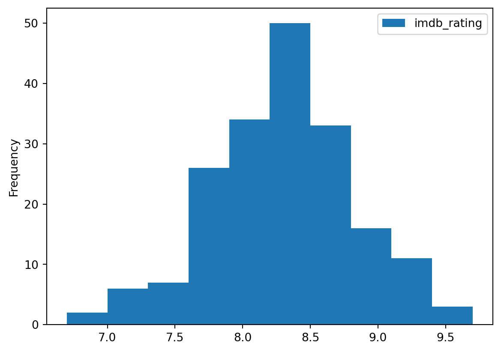
That is really interesting. The episodes with the highest rating also have the greatest number of votes. There was a cleary a great outpouring of happiness there.
::: {.callout-caution collapse=“true”} ### Which episodes were the most voted?
As seen previously, we could filter our dataset:
df[df['total_votes'] > 5000]| season | episode | title | imdb_rating | total_votes | air_date | |
|---|---|---|---|---|---|---|
| 77 | 5 | 13 | Stress Relief | 9.6 | 5948 | 2009-02-01 |
| 137 | 7 | 21 | Goodbye, Michael | 9.7 | 5749 | 2011-04-28 |
| 187 | 9 | 23 | Finale | 9.7 | 7934 | 2013-05-16 |
There are three chapters which received more than 5,000 votes.
Excellent. We may want to know if there’s any influence of season on the ratings:
df.plot(x='season', y='imdb_rating', kind='scatter', title='IMDB ratings and season')<Axes: title={'center': 'IMDB ratings and season'}, xlabel='season', ylabel='imdb_rating'>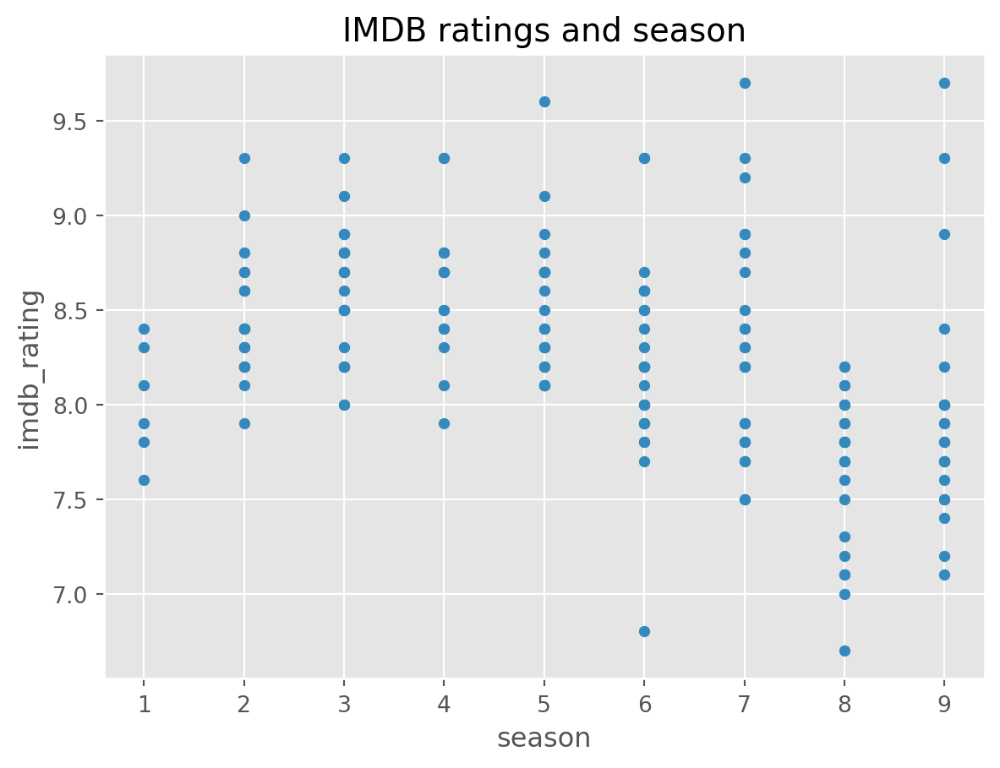
Season 8 seems to be a bit low. But nothing too extreme.
7.4 Dates
Our data contains air date information. Currently, that column is object or a string.
df.head()| season | episode | title | imdb_rating | total_votes | air_date | |
|---|---|---|---|---|---|---|
| 0 | 1 | 1 | Pilot | 7.6 | 3706 | 2005-03-24 |
| 1 | 1 | 2 | Diversity Day | 8.3 | 3566 | 2005-03-29 |
| 2 | 1 | 3 | Health Care | 7.9 | 2983 | 2005-04-05 |
| 3 | 1 | 4 | The Alliance | 8.1 | 2886 | 2005-04-12 |
| 4 | 1 | 5 | Basketball | 8.4 | 3179 | 2005-04-19 |
df.dtypesseason int64
episode int64
title object
imdb_rating float64
total_votes int64
air_date object
dtype: objectWe know this is not accurate, so we can set this to be datetime instead by using the method datetime. That will help us plot the time series of the data.
# Convert air_date to a date.
df['air_date2'] = pd.to_datetime(df['air_date'])
# Check the result
df.dtypesseason int64
episode int64
title object
imdb_rating float64
total_votes int64
air_date object
air_date2 datetime64[ns]
dtype: objectdf.plot(x = 'air_date2', y = 'total_votes', kind='scatter')<Axes: xlabel='air_date2', ylabel='total_votes'>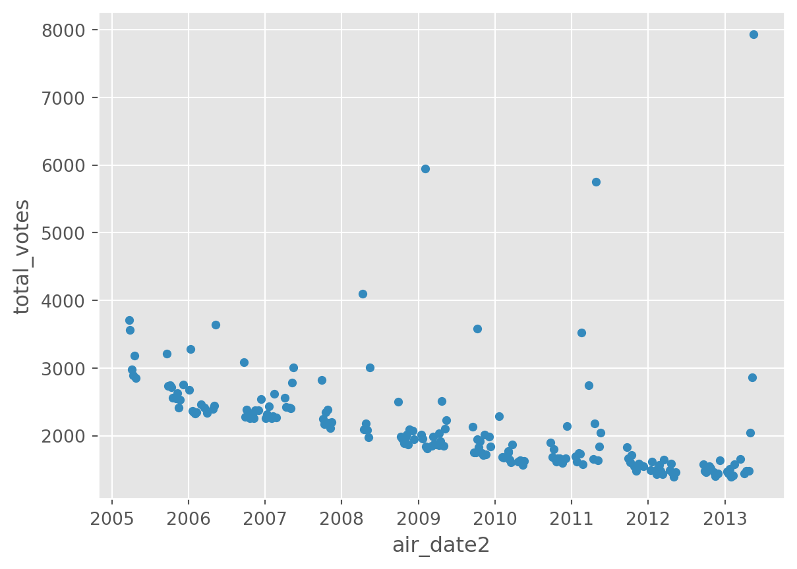
The importance of using the right data type
Can you spot any difference when trying to plot a date that is not stored as a date data type?
df.plot(x = 'air_date', y = 'total_votes', kind='scatter')<Axes: xlabel='air_date', ylabel='total_votes'>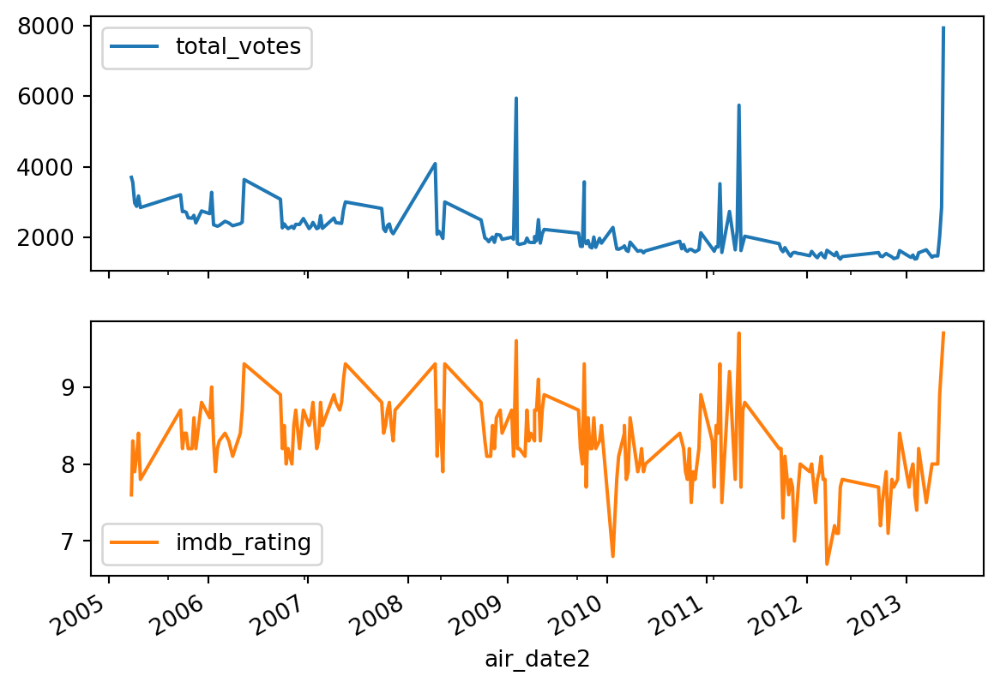
Right, this is probably not what we would expect!
We can look at multiple variables using subplots.
df[['air_date2', 'total_votes', 'imdb_rating']].plot(
x = 'air_date2', subplots=True)array([<Axes: xlabel='air_date2'>, <Axes: xlabel='air_date2'>],
dtype=object)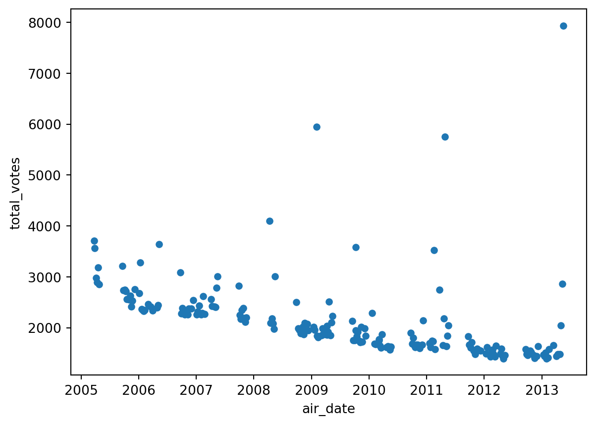
7.5 Multivariate
Our dataset is quite simple. But we can look at two variables (total_votes, imdb_rating) by a third one (season), used as grouping.
df.groupby('season').plot(
kind='scatter', y = 'total_votes', x = 'imdb_rating')season
1 Axes(0.125,0.11;0.775x0.77)
2 Axes(0.125,0.11;0.775x0.77)
3 Axes(0.125,0.11;0.775x0.77)
4 Axes(0.125,0.11;0.775x0.77)
5 Axes(0.125,0.11;0.775x0.77)
6 Axes(0.125,0.11;0.775x0.77)
7 Axes(0.125,0.11;0.775x0.77)
8 Axes(0.125,0.11;0.775x0.77)
9 Axes(0.125,0.11;0.775x0.77)
dtype: object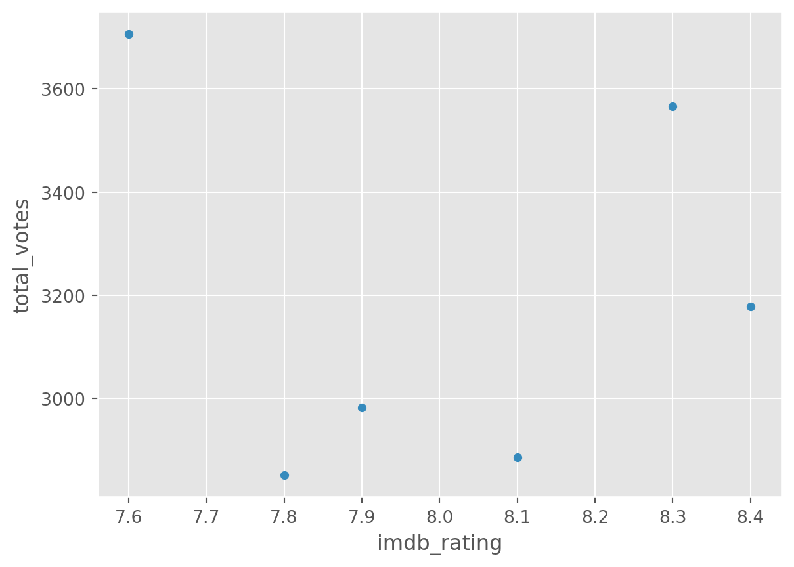

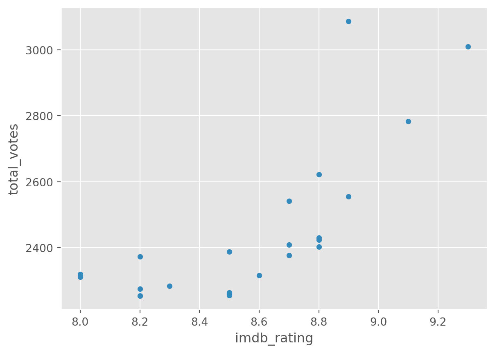
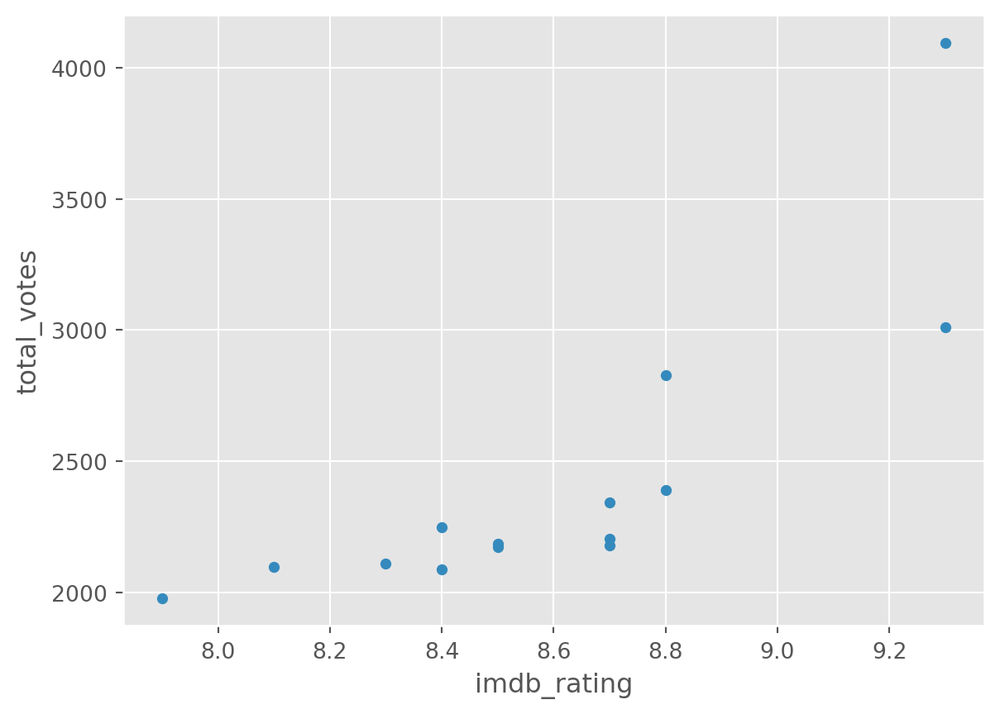
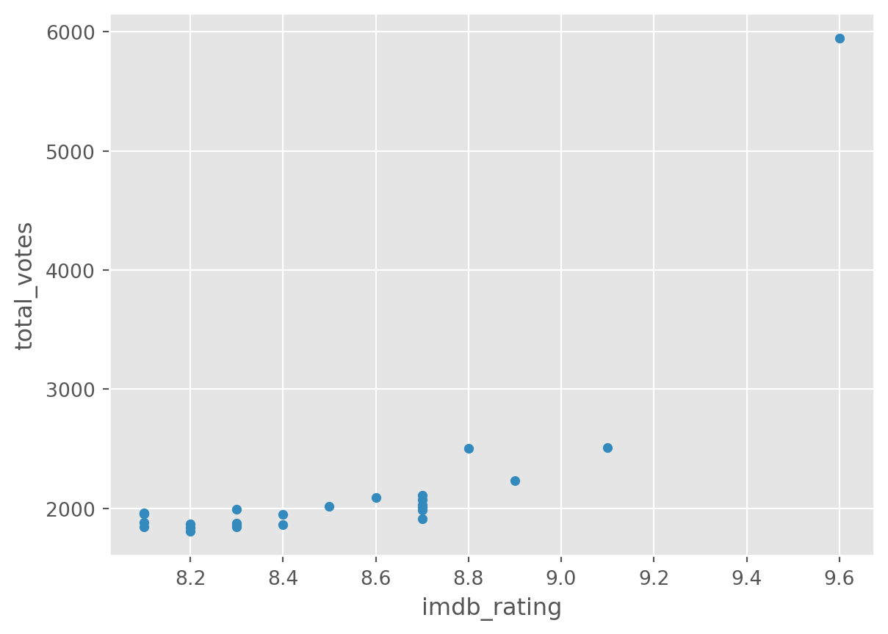
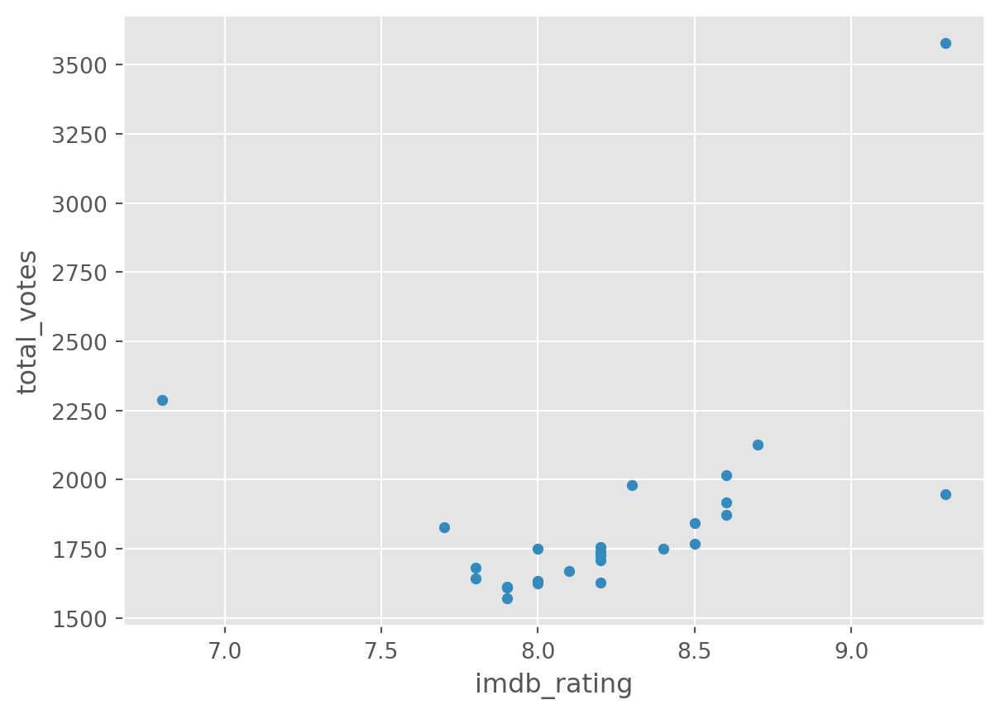
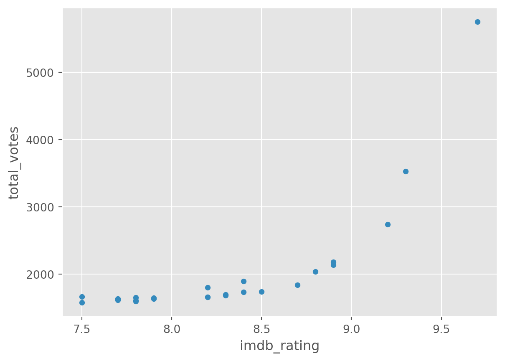


There is a lot more you can do with plots with Pandas and Matplotlib. A good resource is the visualisation section of the pandas documentation.
7.6 How to make good decisions on choosing suitable visualisations?
This is a difficult question to cover quickly. We are running whole modules on that as you know. However, it is very important to ask yourself first what you want to see, what are you trying to find out. The next then to think about suitable charts that can help you answer that question and to also think about what the data is, is it a categorical data feature that you are trying to visualise, or a temporal feature that has some time stamps associated with it, or is it just numbers?
There are lots of good guidance available to help you navigate these decisions. One of the very useful resources is the Visual Vocabulary of the Financial Times:
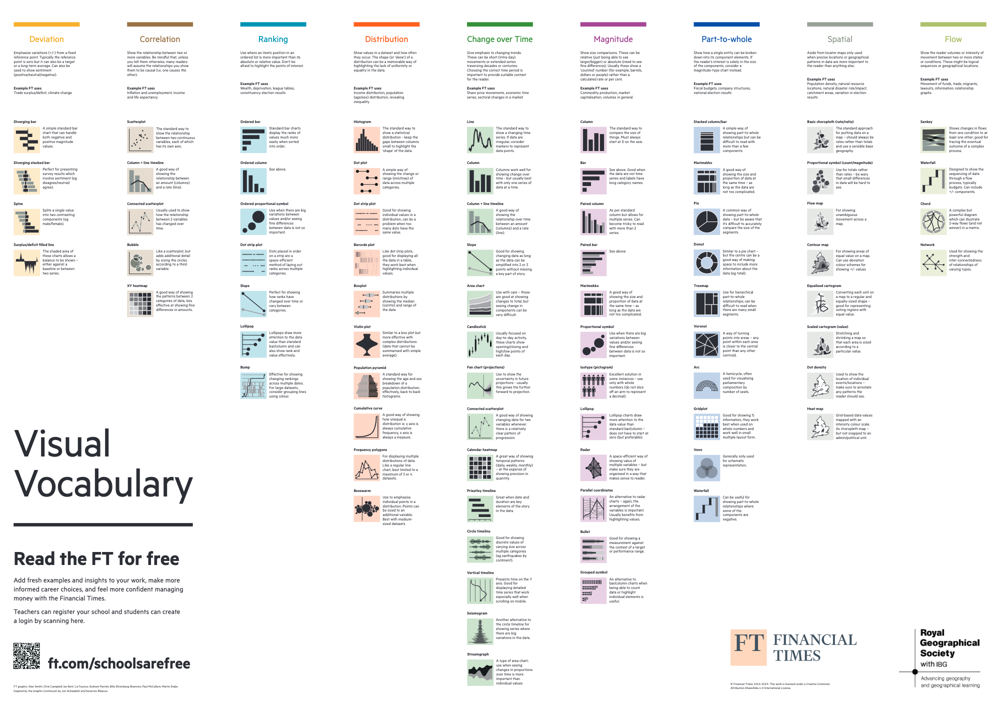
See a webpage here – https://ft-interactive.github.io/visual-vocabulary/ and a high-res version of the graphic above is here – https://github.com/Financial-Times/chart-doctor/tree/main/visual-vocabulary